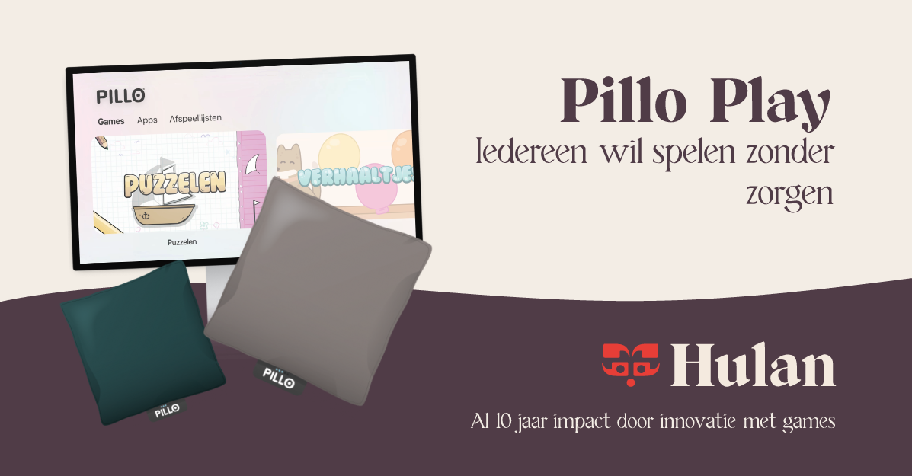
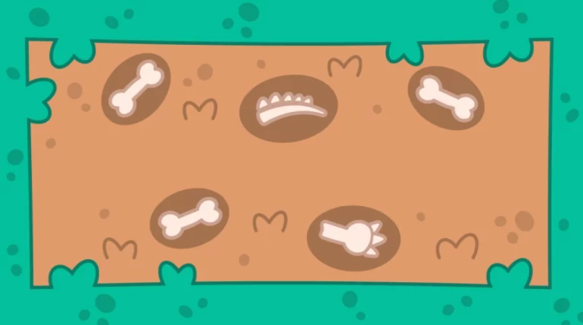
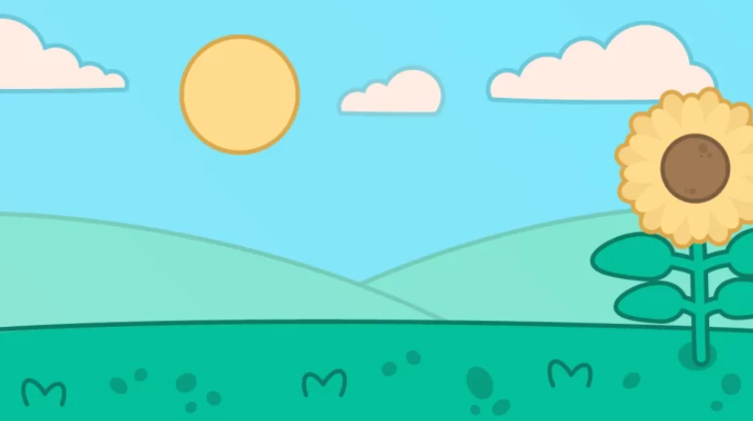
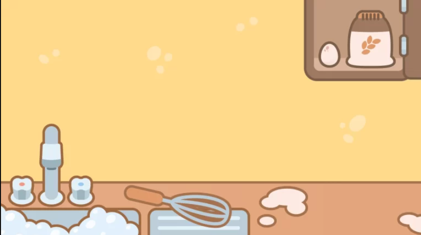

Accessible Mini Games · Unity · C# · Serious Games
For 6 months i got to work on this amazing project for my internship at Hulan.
Pillo Play is a collection of accessible mini-games developed People with disabilities. Pillo is an interactive pillow that works as a game controller through built-in pressure sensors. Players can interact with games by squeezing, pushing, pressing, hitting or hugging the pillow.
Pillo is designed to make gaming accessible to a wide range of people, including children and adults with intellectual or multiple disabilities. The games can be played individually or together and are designed to stimulate movement, activation and action-reaction skills.
During my internship at Hulan, I worked on several mini-games for different Pillo applications. One of the projects I created was a treasure hunt game, and Train game alongside several other smaller games.
Working on Pillo Play taught me how to design gameplay around a different type of controller. Instead of relying on traditional buttons, keyboard controls or a touchscreen, I had to think about how physical interactions such as pressing and squeezing could become meaningful game mechanics.


